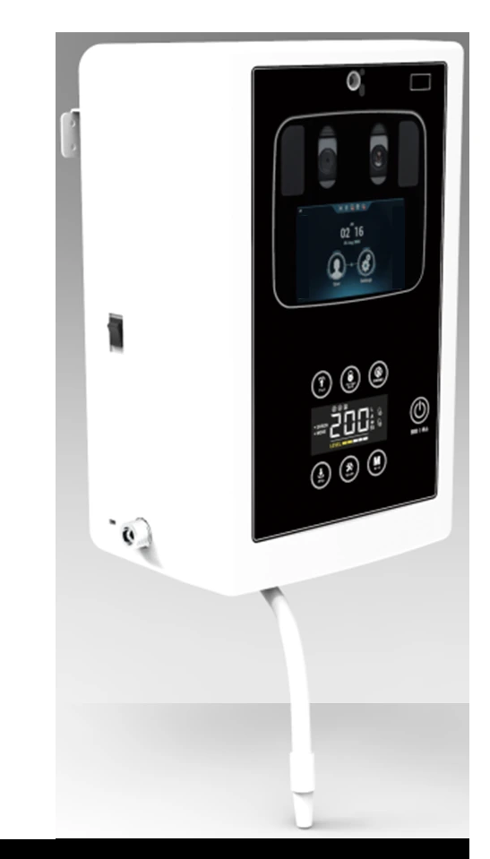

01

원본 확대 이미지를 불러오지 못했습니다. 원본 확대 링크를 이용해 주세요.PROJECT 01
살균소독수 생성기 [SHW-120]
시스템 구상 및 금형구조를 이해한 설계를 통해 양산까지 성공한 제품
SHW-130 모델에 타사 홍채인식&체온측정기 내장을 통한
COVID 19 판데믹 시장을 노린 프리미엄 모델 출시
본인 역할 · 인력 구성
시스템 구상 1명 (100%) / 기구설계 2명 (80%) / 매뉴얼 및 안전인증 1명(100%)
![살균소독수 생성기 [SHW-130] · Introduce project · 1](assets/s09-img01-full-a424d35a59d02118.png)
![MONITOR-MINI-ESS [EQ215 Welcome Display] · 시스템 구상부터 실물 제작까지, 전 과정을 직접 수행 · 1](assets/s17-img01-full-ff3c9346de8e7ca6.png)